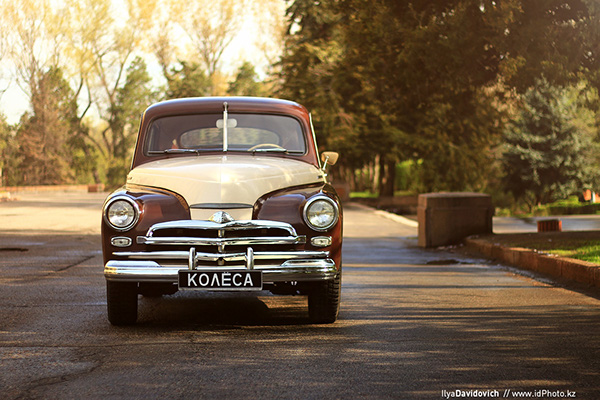

ГАЗ М-20 «Побе́да» — советский легковой автомобиль среднего класса, серийно производившийся на Горьковском автомобильном заводе (ГАЗ) в 1946—1958 годах.
Заводской индекс модели — М-20. Легковой автомобиль представляет собой третье поколение легковых машин ГАЗ, является преемником модели М-1. 28 июня 1946 года начался серийный выпуск автомобилей «Победа». Всего до 31 мая 1958 года было выпущено 241 497 машин.
В начале февраля 1943 года, когда стало ясно, что СССР победит в Великой Отечественной войне, в Москве состоялось собрание, посвященное разработке нового легкового автомобиля.19 июня 1945 года, после прохождения государственных приёмочных испытаний, предсерийные экземпляры «Победы» были продемонстрированы в Москве высшему государственному и партийному руководству во главе с Иосифом Сталиным.Существует версия, что автомобиль хотели назвать «Родина», но когда в июне 1944 года Сталину показали образец будущего серийного автомобиля, тот спросил: «И почём мы будем Родину продавать?». Тогда Сталину сообщили второй вариант названия ПОБЕДА, который был одобрен.


19 июня 1945 года готовый ГАЗ М-20 был представлен самому вождю Сталину. Глянув на этот автомобиль, у Сталина не возникло никаких эмоций. Он лишь скептически добавил: “Надо принять машину с четверкой, машина хорошая”. Аргументировал он это тем, что такой автомобиль склоняется к модели высокого класса, который не очень бы был приемлем для обычных граждан. Но именно убеждения Липгарта по поводу того, что машина очень экономна, по сравнению с другими, дали свои плоды и вождь разрешил пускать в производство Победу.
ГАЗ М20 на первый взгляд казался обычным автомобилем, нацеленным удовлетворить средний класс населения. Но стоит только поближе осмотреть дизайн "Победы", как сразу же находишь все новые и новые детали, которые в совокупности формируют весьма насыщенный и яркий внешний вид.

Еще работники Горьковского автомобильного завода установили наличие дворников и пары переключателей для них (смотря, какая сила дождя). Передняя панель обладает более информативными приборами, также можно наблюдать установку часов, которые не мешают общему интерьеру. Передняя панель обладает более информативными приборами,также можно наблюдать установку часов,которые не мешают общему интерьеру
Интерьер имел отделку пластиком,который имитировал деревянные разводы,а кресла обшивали дермантином,в редких случаях использовали велюр. Если говорить про обзорность, то она очень страдала, однако не стоит забывать о том, что в те годы автомобилей не было так много, исходя из этого, не было надобности в установке зеркала задней обзорности. Двери транспортного средства имеют наличие форточек, а стекла можно было поднимать и опускать ручным способом, их заключили в плотные рамки, дабы избежать дребезжания.

Как упоминалось выше, седан применяли успешно под такси, поэтому установленный сзади диван был довольно просторным для пассажиров с любой комплекцией. Те, кто любят курить, смогут воспользоваться вмонтированной пепельницей в спинке установленного впереди дивана. Чтобы осуществлялась хорошая вентиляция салона задние двери также получили наличие форточек.